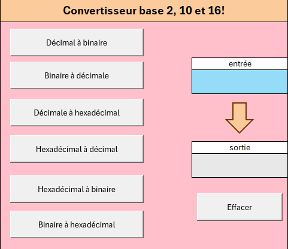
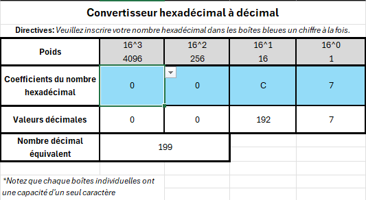
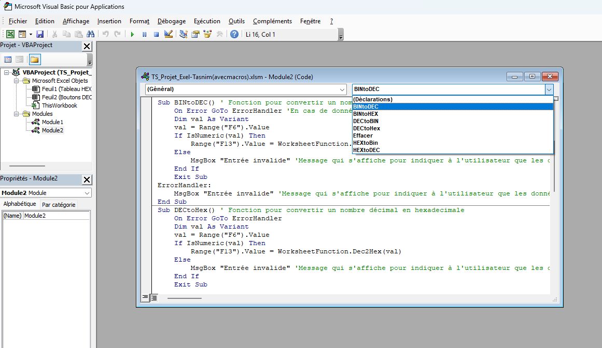

J'ai réalisé un projet Excel pour convertir des valeurs binaires, héxadécimales et décimales. J'ai créé un tableau qui a pour but de convertir les valeurs numériques en un autre système en utilisant le code VBA dans Excel. Décimale à binaire et vice-versa, décimale à hexadécimale et vice-versa, et binaire à hexadécimale et vice-versa.
J'ai appris comment utiliser une macro et l'outil développeur dans Excel. J'ai aussi appris à arrêter le programme lorsqu'une valeur est inadmissible pour le programme. Je suis fière du résultat de ce projet parce que c'est un outil qui peut aider les élèves à convertir des valeurs rapidement et vérifier ses réponses comme une calculatrice.


À gauche, j'ai aussi visualisé les nombres hexadécimales en décomposant le nombre en coefficients hexadécimales.